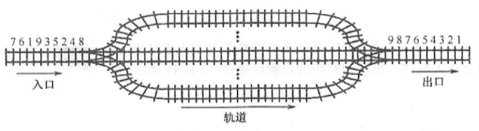
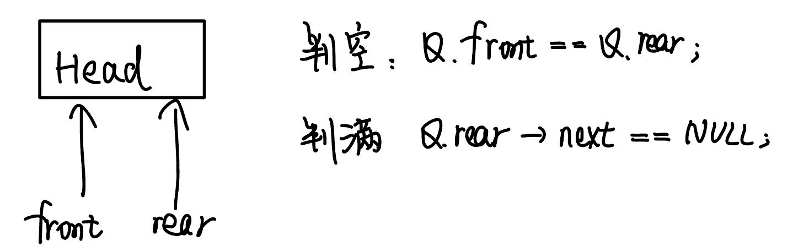
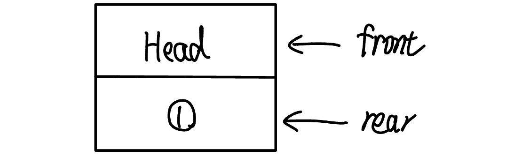

2022.09.08
操作受限的线性表、先进先出FIFO、队头（删除）、队尾（添加）、空队列
// 队列的顺序实现 - 两种方案/** * 定义 * 初始化 * 判空 * 增 * 删 * 查 */
// 定义typedef struct{ int data[MaxSize]; int front,rear;}SqQueue1;// 会浪费一个空间
typedef struct{ int data[MaxSize]; int front,rear; int size;}SqQueue2; // 不会浪费空间
typedef struct{ int data[MaxSize]; int front,rear; int tag; // 当最近一次是删除时, tag==0, - 只有删除才能导致队空, // 当最近一次是添加时, tag==1; - 只有插入再能导致队满. // 队满条件: Q.rear==Q.front && Q.tag=1; // 队空条件: Q.rear==Q.front && Q.tag=0;}SqQueue3; // 不会浪费空间
// 初始化bool InitSqQueue1(SqQueue1 &Q){ Q.front = 0; Q.rear = 0; return true;}// 队尾指针可能指向下一个要插入的元素, 也可以能指向最后一个内容, 考试时要注意
bool InitSqQueue2(SqQueue2 &Q){ Q.front = 0; Q.rear = 0; Q.size = 0; return true;}
// 判空bool EmptySqQueue1(SqQueue1 Q){ return Q.front == Q.rear;}
bool EmptySqQueue2(SqQueue2 Q){ return Q.size == 0;}
// 插入bool EnQueue1(SqQueue1 &Q, int x){ // 队满 if((Q.rear+1)%MaxSize == Q.front) return false; // 插入 Q.data[Q.rear] = x; Q.rear = (Q.rear+1)%MaxSize;//取余运算 return true;}
bool EnQueue2(SqQueue2 &Q, int x){ // 队满 if(Q.size==MaxSize) return false; // 插入 Q.data[Q.rear] = x; Q.rear = (Q.rear+1)%MaxSize;//取余运算 Q.size++; return true;}
// 出队bool DeQueue1(SqQueue1 &Q, int &x){ // 队空 if(Q.rear == Q.front) return false; // 删除 x = Q.data[Q.front]; Q.front = (Q.front+1)%MaxSize; return true;}
bool DeQueue2(SqQueue2 &Q, int &x){ // 队空 if(Q.size == 0) return false; // 删除 x = Q.data[Q.front]; Q.front = (Q.front+1)%MaxSize; Q.size--; return true;}
// 获取队头bool GetHead1(SqQueue1 &Q, int &x){ // 队空 if(Q.rear == Q.front) return false; // 删除 x = Q.data[Q.front]; return true;}
bool GetHead2(SqQueue2 &Q, int &x){ // 队空 if(Q.rear == Q.front) return false; // 删除 x = Q.data[Q.front]; return true;}
int main(){ SqQueue1 Q; InitSqQueue1(Q); EnQueue1(Q,1); EnQueue1(Q,2); EnQueue1(Q,3);
return 0;}
// 队列的链式实现/** * 定义 * 初始化 * 判空 * 增 * 删 * 查 */
// 定义typedef struct LNode{ int data; struct LNode *next;}LNode;
typedef struct{ LNode *front, *rear; }LinkQueue;
// 初始化 - 带头节点void InitQueue1(LinkQueue &Q){ Q.rear = (LNode*)malloc(sizeof(LNode)); if(Q.rear == NULL) return; Q.front = Q.rear; Q.front->next = NULL;}
// 初始化 - 不带头节点void InitQueue2(LinkQueue &Q){ Q.rear = NULL; Q.front = Q.rear;}
// 判空 - 带头节点bool EmptyLinkQueue1(LinkQueue Q){ return Q.rear == Q.front;}
// 判空 - 不带头节点bool EmptyLinkQueue2(LinkQueue Q){ return Q.front==NULL;}
// 进栈 - 带头节点void EnQueue1(LinkQueue &Q, int x){ // 创建新节点 LNode *s = (LNode*)malloc(sizeof(LNode)); s->next = NULL; s->data = x; // 尾插 Q.rear->next = s; // 修改尾指针 Q.rear = s;}
// 进栈 - 不带头节点void EnQueue2(LinkQueue &Q, int x){ // 创建新节点 LNode *s = (LNode*)malloc(sizeof(LNode)); s->next = NULL; s->data = x; // 尾插 if(Q.rear==NULL){ Q.rear = s; Q.front = s; }else{ Q.rear->next = s; Q.rear = s; }}
// 出栈 - 带头节点bool DeQueue1(LinkQueue &Q,int &x){ // 空队 if(Q.rear==Q.front)return false; // 获取第一个节点 LNode *s = Q.front->next; // 获取数据并返回 x = s->data; // 改变front Q.front->next = s->next; // 改变rear - 最后一个节点 if(s->next==NULL) Q.rear = Q.front; // 释放第一个节点 free(s); return true;}
// 出栈 - 不带头节点bool DeQueue2(LinkQueue &Q,int &x){ // 空队 if(Q.front==NULL) return false; // 获取节点s LNode *s = Q.front; // 保存数据 x = Q.front->data; // 连接队列 if(Q.rear==Q.front) Q.rear=NULL; Q.front = s->next; // 删除s free(s); return true;}
// 取队列元素 - 带头节点bool GetFront1(LinkQueue Q,int &x){ if(Q.rear==Q.front)return false; x = Q.front->next->data; return true;}
// 取队列元素 - 不带头节点bool GetFront2(LinkQueue Q,int &x){ if(Q.rear==NULL)return false; x = Q.front->data; return true;}
int main(){ int x=0; printf("带头节点队列测试\n"); LinkQueue Q1; InitQueue1(Q1); printf("是否为空:%d\n",EmptyLinkQueue1(Q1)); printf("插入 1 ");EnQueue1(Q1,1); printf("插入 2 ");EnQueue1(Q1,2); printf("插入 3 ");EnQueue1(Q1,3); printf("插入 4 ");EnQueue1(Q1,4); printf("\n是否为空:%d\n",EmptyLinkQueue1(Q1)); DeQueue1(Q1,x);printf("出栈 %d ",x); DeQueue1(Q1,x);printf("出栈 %d ",x); DeQueue1(Q1,x);printf("出栈 %d ",x); DeQueue1(Q1,x);printf("出栈 %d ",x); printf("\n是否为空:%d\n",EmptyLinkQueue1(Q1));
printf("\n不带头节点队列测试\n"); LinkQueue Q2; InitQueue2(Q2); printf("是否为空:%d\n",EmptyLinkQueue2(Q2)); printf("插入 1 ");EnQueue2(Q2,1); printf("插入 2 ");EnQueue2(Q2,2); DeQueue2(Q2,x);printf("出栈 %d ",x); printf("插入 3 ");EnQueue2(Q2,3); printf("插入 4 ");EnQueue2(Q2,4); printf("\n是否为空:%d\n",EmptyLinkQueue2(Q2)); DeQueue2(Q2,x);printf("出栈 %d ",x); DeQueue2(Q2,x);printf("出栈 %d ",x); DeQueue2(Q2,x);printf("出栈 %d ",x); DeQueue2(Q2,x);printf("出栈 %d ",x); printf("\n是否为空:%d\n",EmptyLinkQueue1(Q2)); return 0;}栈和队列的主要区别在于（） A. 它们的逻辑结构不一样 C.所包含的元素不一样 B. 它们的存储结构不一样 D. 插入、删除操作的限定不一样
【答案】：D
队列的“先进先出”特性是指（） I. 最后插入队列中的元素总是最后被删除 II. 当同时进行插入、删除操作时，总是插入操作优先 III. 每当有删除操作时，总要先做一次插入操作 IV.每次从队列中删除的总是最早插入的元素 A. I B.I和IV C.II和III D. IV
【答案】：B
允许对队列进行的操作有（）。 A.对队列中的元素排序 B. 取出最近进队的元素 C.在队列元素之间插入元素 D.删除队头元素
【答案】：D
一个队列的入队顺序是1，2,3，4，则出队的输出顺序是（ ）。 A. 4,3,2,1 B. 1,2,3,4 C. 1,4,3,2 D. 3.2.4,1
【答案】：B
循环队列存储在数组A[O...n]中，入队时的操作为（ ）。 A. rear=rear+1 B. rear=(rear+1) mod (n-1) C. rear=(rear+1) mod n D. rear=(rear+1) mod (n+1)
【答案】：D
已知循环队列的存储空问为教組 A[21]，float 指向队头元素的前一个位置，rear指向队尾元素，假设当前 front 和 rear 的值分别为8和3，则该队列的长度为（）。 A. 5 B. 6 C. 16 D. 17
【答案】：0，1，2，3，4，5，6，7，8，【9。。。，19，20，0，1，2，3】，4，5
C
若用数组A[0..5]来实现铺环队列，且当前rear和front的值分别为 1和5，当从队列中州除一个元素，再加入两个元素后，rear 和front 的值分别为（ ）。 A.3和4 B.3和0 C. 5和0 D5和1
【答案】： 0，1，2，3，4，5，0，1，2，3，B
假设一个循环队列Q[MaxSize]的队头指针为 front，队尾指針为 rear，队列的最大容量为 Maxsize，此外，该队列再没有其他数据成员，则判断该队的列满条件是(）。 A. Q. front==Q.rear B. Q.front+Q.rear>=MaxSize C. Q. front== (Q.rear+1) %MaxSize D. Q.rear== (Q. front+1) % MaxSize
【答案】：A->C
最适合用作链队的链表是（）。 A.带队首指针和队尾指针的循环单链表 B. 带队首指针和队尾指针的非循环单链表 C.只带队首指针的非補环单链表 D. 只带队首指针的辅环单链表
【答案】：A->B
最不适合用作链式队列的链表是（ ）。 A. 只带队首指针的非循环双链表 B. 只带队首指针的循环双链表 C. 只带队尾指针的循环双链表 D. 只带队尾指针的循环单链表
【答案】：D->A
在用单链表实现队列时，队头设在链表的（）位置。 A.链头 B.链尾 C.链中 D.以上都可以
【答案】：D->A
用链式存储方式的队列进行删除操作时需要（）。 A．仅修改头指针 B.仅修改尾指针 C.头尾指针都要修改 D.头尾指针可能都要修改
【答案】：A->D
在一个链队列中，假设队头指针为front，队尾指针为rear，x所指向的元素需要入队，则需要执行的操作为（ ）. A. front=x, front=front->next B. x->next=front->next, front=x C. rear-›next=x, rear=x D. rear-›next=x, x-›next=null, rear=x
【答案】：C->D
假设循环单链表表示的队列长度为n，队头固定在链表尾，若只设头指针，则进队採作的时间复杂度为（）. A. O(n) B. O(1) C. O(n^2) D. O(nlog_2 n)
【答案】：B->A
若以1,2,3,4作为双端队列的输入序列，则既不能由输入受限的双端队列得到，又不能由输出受限的双端队列得到的输出序列是（）。 A. 1,2,3,4 B. 4.1.3.2 C. 4,2,3,1 D. 4,2,1,3
【答案】：C
【2010 统考真题】某队列允许在共两端进行入队採作，但仅允许在一端进行出队操作。若元素a,b,c,d,e依次入此队列后再进行出队探作，則不可能得到的出队序列是（). A. b,a,c,d,e B. d.b,a,c,e C. d,b,c.a.e D. e.c.b.a.d
【答案】：C
【2011 统考真题】已知循环队列存储在一维数组，A[0, n-1]中，且队列非空时 front 和 rear 分别指向队头元素和队尾元素。若初始时队列为空，且要求第一个进入队列的元素存储在A[0]处，则初始时front和rear的值分别是（ ） A. 0.0 B. 0, n-1 C. n-1, 0 D. n-1,n-1
【答案】：B
【2014 统考真题】循环队列放在一维数组A[O..M-1]中，end1 指向队头元素，end2 指向队尾元素的后一个位置。假设队列两端均可进行入队和出队操作，队列中最多能容纳 M-1 个元泰。初始时为空。下列判断队空和队满的条件中，正确的是（ ）。 A. 队空：end1==end2; 队满：end1==(end2+1)mod M; B. 队空：end1==end2; 队满：end2== (end1+1)mod (M-1) C. 队空：end2== (end1+1) mod M; 队满：end1== (end2+1)mod M D. 队空：end1== (end2+1) mod M; 队满：end2== (end1+1)mod (M-1)
【答案】：D->A
【2016 统考真题】设有如下图所示的火车车轨，入口到出口之问有n条轨道，列车的行进方向均为从左至右，列车可驶入任意一条轨道。现有编号为 1~9 的9列列车，驶入的次序依次是8,4,2,5,3,9,1,6,7。若期望驶出的次序依次为1~9，则n至少是（） A. 2 B. 3 C. 4 D. 5

【答案】：8 4 2 5 3 9 1 6 7
98
7654
32
1
C
【2018 统考真题】现有队列Q与栈S，初始时Q中的元素依次是1,2,3,4,5,6(1 在以头)，S为空。若仅允许下列 3 种操作：① 出队并输出出队元素;② 出队并将出队元素入栈;③ 出栈并输出出栈元秦，则不能得到的输出序列是（ ）。 A. 1.2.5.6.4.3 B. 2.3.4.5.6.1 C. 3.4.5.6.1.2 D. 6.5,4,3.2.1
【答案】：C
【2021 统考真题】初始为空的队列Q的一端仅能进行入队操作，另外一端既能进行入队操作又能进行出队操作。若Q的入队序列是1,2,3,4,5，则不能得到的出以序列是( ) A. 5, 4, 3, 1, 2 B. 5, 3, 1, 2, 4 C. 4, 2, 1, 3, 5 D. 4, 1, 3, 2, 5
【答案】：D
若希望循环队列中的元索都能得到利用，则需设置一个标志域tag，并以tag的值为0或1来区分队头指针front 和队尾指针rear相同时的队列状态是“空”还是“满”试编写与此结枸相应的入队和出队算法。
【答案】：
x
int MAX;
bool pop(Queue &Q, int &num){ if((Q.rear+1)%MAX == Q.front && Q.tag == 0) return false; num == Q.data[Q.front]; Q.front = (Q.front+1)%MAX; Q.tag = 0; return true;}
bool push(Queue &Q, int num){ if((Q.rear+1)%MAX == Q.front && Q.tag == 1) return false; Q.data[Q.rear] == num; Q.rear = (Q.rear+1)%MAX; Q.tag = 1; return true;}Q是一个队列，S是一个空栈，实现将队列中的元素逆置的算法。
xxxxxxxxxxvoid transform(Queue &Q, Stack &S){ while(QIsEmpty(Q)!=false) SPush(S,QPop(Q)); while(SIsEmpty(S)!=false) QPush(Q,SPop(S));}利用两个栈 S1,S2 来模拟一个队列，已知栈的4个运算定义如下：
x
Push(S, x); //元素× 入栈 SPop(S, x); //s出栈并将出栈的值赋给×StackEmpty (S) : //判新栈是否为空StackOverflow(S); //判断栈是否满如何利用栈的运算来实现该队列的3个运算（形参由读者根据要求自己设计）？
x
Enqueue; //将元素x入队Dequeue; // 出队，并将元素存在x中QueueEmpty; // 判断队列是否为空【答案】：
x
bool Enqueue(int x){ if(StackOverflow(S1)) return false; if(!StackEmpty(S2)) return false; Push(S2,x); int temp; // 再把S1内容放到S2 while(!StackEmpty(S1) && !StackOverflow(S2)){ Pop(S1,temp); Push(S2,temp); } // 再把S2内容放回去 while(!StackEmpty(S2) && !StackOverflow(S1)){ Pop(S2,temp); Push(S1,temp); } return true;}
bool Dequeue(int &x){ if(StackEmpty(S1)) return false; if(!StackEmpty(S2)) return false; int temp; // 再把S1内容放到S2 while(!StackEmpty(S1) && !StackOverflow(S2)){ Pop(S1,temp); Push(S2,temp); } // 再把S2内容放回去 Pop(S2,x) while(!StackEmpty(S2) && !StackOverflow(S1)){ Pop(S2,temp); Push(S1,temp); } return true;}
bool QueueEmpty(){ return StackEmpty(S1);}【2019统考真题】请设计一个队列，要求满足：【1】初始时对列为空【2】入队时，允许增加队列占用空间;【3】出队后，出队元素所占用的空向可重复使用，空间只增不减：【4】入队採作和出队操作的时间复杂度始终保持为 0（1）。请回答下列问题： 1）该队列是应选择链式存储结构，还是应选择顺序存储结构？ 2）画出队列的初始状态，并给出判断队空和队满的条件。 3）画出第一个元素入队后的队列状态。 4）给出入队操作和出队操作的基本过程。
【答案】：
链式


x
bool push(Queue &Q, int num){ LNode *p = NULL; if(Q.rear->next==NULL){ // 尾指针指向的结点后没有空结点 p = (LNode*)malloc(sizeof(Lnode)); if(p==NULL) return false; p->num = num; Q.rear->next = p; Q.rear = p; p->next = NULL; return true; }else{ // 尾指针指向的结点后有空结点 Q.rear->next->num = num; Q.rear = Q.rear->next; return true; }}
bool pop(Queue &Q, int &num){ LNode *p = NULL; // 空队列 if(Q.front==Q.rear) return false; if(Q.front->next==Q.rear){ // 队列仅剩一个元素 num = Q.front->next->num; Q.rear = Q.front; return true; }else{ // 队列还有两个及以上元素，把空节点挂在rear后边 p = Q.front->next; p->next = Q.rear->next; num = p->num; rear->next = p; return true; }}